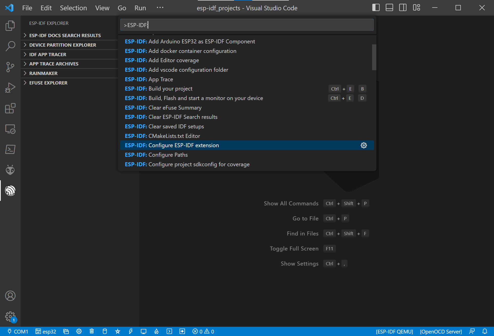
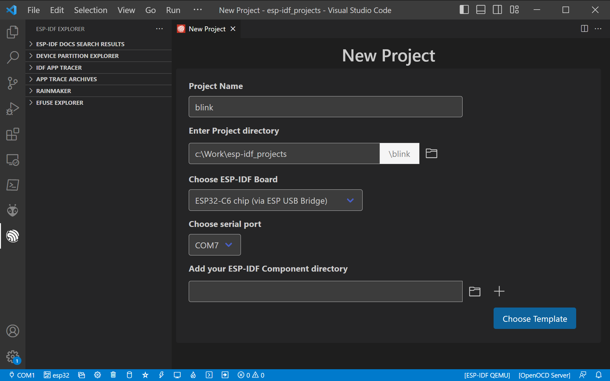

การใช้งาน VS Code IDE + Espresssif IDF Extension สำหรับ Windows#
▷ Espressif VS Code Extension#
การเขียนโค้ด C/C++ สำหรับชิป ESP32 โดยใช้ซอฟต์แวร์ Espressif ESP-IDF สามารถทำได้ง่ายขึ้น เมื่อใช้งานร่วมกับ VS Code IDE โดยจะต้องติดตั้งส่วนขยายที่มีชื่อว่า Espressif VS Code Extension
ข้อสังเกต: ตัวเลือกทางซอฟต์แวร์ที่สามารถนำมาใช้เพื่อเขียนโค้ด C/C++ สำหรับ ESP32 ด้วย ESP-IDF ได้แก่
- Espressif-IDE (Eclipse-based) + ESP-IDF
- VS Code IDE + Platform IO (PIO) Extension
- Wokwi Simulator (Web-based)
ขั้นตอนการดำเนินการ
- ติดตั้งและใช้งาน VS Code IDE สำหรับ Windows
- ติดตั้ง Espressif VS Code Extension
- ตั้งค่าการใช้งานสำหรับ Espressif VS Code Extension เช่น เลือกใช้เวอร์ชันของ ESP-IDF และถ้ายังไม่เคยใช้งาน จะต้องมีการดาวน์โหลดไฟล์ และติดตั้งใช้งานในเครื่องคอมพิวเตอร์ของผู้ใช้
- สร้างโปรเจกต์ใหม่จากตัวอย่างของ ESP-IDF
- เลือกใช้ชิป ESP32-C6 และบอร์ด ESP32-C6 DevKitC-1
- ทำขั้นตอน Build Project เพื่อคอมไพล์โค้ดให้ได้ไฟล์ .bin (ในไดเรกทอรีย่อยชื่อ
buildของโปรเจกต์) - ทำขั้นตอน Upload Firmware ไปยังบอร์ดไมโครคอนโทรลเลอร์
ถ้ายังไม่เคยใช้งาน VS Code IDE ให้ดาวน์โหลดและติดตั้งไฟล์สำหรับ Windows จากเว็บไซต์ของ Microsoft: https://code.visualstudio.com/download
กดปุ่ม Ctrl+Shift+X) ไปยัง Extensions แล้วค้นหาคำว่า "espressif esp-idf"
และคลิกเลือก Espressif IDF แล้วกดปุ่ม Install
กดปุ่ม Ctrl+Shift+P หรือ F1 แล้วพิมพ์คำว่า ESP-IDF: ในช่องข้อความ
จากนั้นก็สามารถเลือกทำคำสั่งต่าง ๆ ของ ESP-IDF ได้ และหลาย ๆ คำสั่ง ก็ให้ผลเหมือนการเรียกใช้คำสั่ง
idf.py แบบ Commmand Line
ข้อสังเกต: แถบด้านล่างของ VS Code IDE ก็มีไอคอนสำหรับเลือกทำคำสั่งต่าง ๆ ของ ESP-IDF ได้เช่นกัน
เริ่มต้นด้วยการทำคำสั่ง "ESP-IDF: Configure ESP-IDF extension" เพื่อตั้งค่าการใช้งาน Espressif ESP-IDF Extension

คลิกเลือก EXPRESS เพื่อเข้าสู่ขั้นตอน ESP-IDF Setup (Express Setup)
ในตัวอย่างนี้ จะเลือกใช้ ESP-IDF v5.1-rc1 ซึ่งรองรับการใช้งานชิป ESP32-C6 แล้วกดปุ่ม Install เพื่อเริ่มต้นการดาวน์โหลดและติดตั้งไฟล์ในคอมพิวเตอร์ของผู้ใช้ ซึ่งจะใช้เวลาหลายนาที
ขั้นตอนถัดไปเป็นการสร้างโปรเจกต์ใหม่ โดยใช้โค้ดตัวอย่างของ ESP-IDF ทำคำสั่ง ESP-IDF: New Project
ตั้งชื่อโปรเจกต์ใหม่ เลือกไดเรกทรอรีสำหรับเก็บไฟล์ต่าง ๆ ของโปรเจกต์ เลือกบอร์ด ESP-IDF Board ที่ต้องการใช้งาน
ในตัวอย่างนี้ได้เลือกใช้ "ESP32-C6 chip (via ESP USB Bridge)" และถ้าได้มีการเชื่อมต่อบอร์ดกับคอมพิวเตอร์แล้ว ก็สามารถเลือกหมายเลข USB-Serial COM port ได้
ในขั้นตอนถัดไป ให้กดปุ่ม Choose Template แล้วเลือกเมนู "ESP-IDF" และตัวอย่าง "esp-idf/get-started/blink" จากนั้นกดปุ่ม "Create project using template 'blink'" เพื่อสร้างโปรเจกต์

เมื่อเปิดไดเรกทอรีของโปรเจกต์ใหม่ได้แล้ว ทำขั้นตอน
"ESP-IDF: SDK configuration editor (menuconfig)"
เพื่อตั้งค่าการใช้งานสำหรับโปรเจกต์ blink เช่น ตรวจสอบการตั้งค่าในส่วนที่เรียกว่า
"Example Configuration" เพื่อกำหนดค่า GPIO สำหรับ
RMT Pin ซึ่งจะใช้กับ WS2812B RGB LED บนบอร์ด
จากนั้นให้ทำขั้นตอน "ESP-IDF: Build project" เพื่อคอมไพล์โค้ดให้ได้ไฟล์ .bin
ตัวอย่างข้อความในหน้าต่าง OUTPUT ในขณะที่กำลังทำขั้นตอน "ESP-IDF: Build project"
เมื่อคอมไพล์โค้ดได้แล้ว ถัดไปทำขั้นตอน "ESP-IDF: Flash (UART) your project"
ตัวอย่างข้อความในหน้าต่าง OUTPUT เมื่อสามารถอัปโหลดไฟล์เฟิร์มแวร์ (.bin) ไปยังบอร์ดไมโครคอนโทรลเลอร์ได้สำเร็จแล้ว
รูป: บอร์ด ESP32-C6 DevKitC-1 (V1.1) ที่ได้เลือกมาทดลองใช้งาน
▷ กล่าวสรุป#
บทความนี้ได้นำเสนอขั้นตอนการติดตั้งและใช้งาน Espressif ESP-IDF Extension สำหรับ VS Code IDE โดยใช้งานกับคอมพิวเตอร์ผู้ใช้ที่มีระบบปฏิบัติการ Windows และทดลองสร้างโปรเจกต์ใหม่จากโค้ดตัวอย่างของ ESP-IDF เพื่อทำให้ LED บนบอร์ด ESP32-C6 DevKitC-1 กระพริบได้
This work is licensed under a Creative Commons Attribution-ShareAlike 4.0 International License.
Created: 2023-06-15 | Last Updated: 2023-06-16